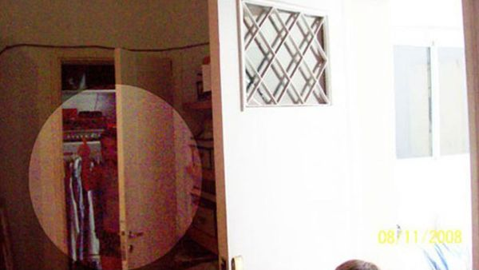
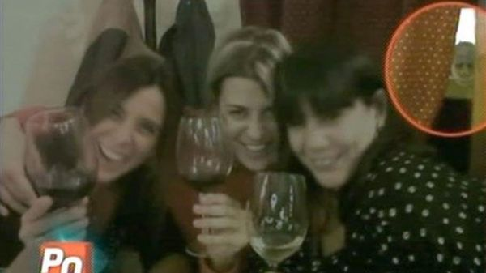

Aparicions Paranormals
Hi ha moltes persones que asseguren haver vist aparicions paranormals, aparicions
fantasmals, aparicions espectrals o com li vulgueu dir.I no només persones poc conegudes,
sinó que gent com Winston Churchill o Arthur Conan Doyle també ho van poder experimentar.
Existeix alguna explicació a això? La ciència dona varies. Algunes de les experiències
paranormals son explicables. Sofrir danys en certes regions de l’hemisferi dret del cervell
o certes formes d’epilèpsia estan darrera de que efectivament hi ha
gent que assegura haver
vist un poltergeist on ell viu o creu haver vist ombres davant d’ells.
Hi ha mols famosos que han pogut experimentar experiències fantasmals.
Com per exemple la de la famosa Sabrina Ravelli que assegura haver vist un home
de 40 anys i amb cabell llarg que mentre dorm li diu“no et preocupis no et robaré el
teu lloc” mentre dormia a casa d’una amiga seva, però finalment va aconseguir reconciliar el somni.
Després d’una estona esmorzant, comentant amb la seva amiga lo que havia passat, va comprendre que
el home era un esperit. I ara des de llavors l’esperit dorm en el costat en el que ella va dormir.
Ella sempre ha assegurat no haver begut en aquella nit ni haver-se drogat, i també
assegura no haver tingut cap dany a cap dels dos hemisferis del cervell. ... al fi
i al cap el problema el té la seva amiga, però ella es va emportar un bon espant! “espero
que no s’enamori de mi!” va dir a TeleShow, ja, permetent-se bromejar.
La seva va ser la última experiència que un famós ha viscut, però hi ha casos similars, i de pitjors que el de Sabrina Ravelli.
Com per exemple el de Eugenia Attias que un dia celebrant una festa amb una amiga es van sentir acompanyades tot el rato, i tot i que
anaven emborratxades després quan es van recuperar, van comprovar que en les fotos hi havien poltergeist:

